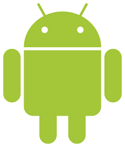
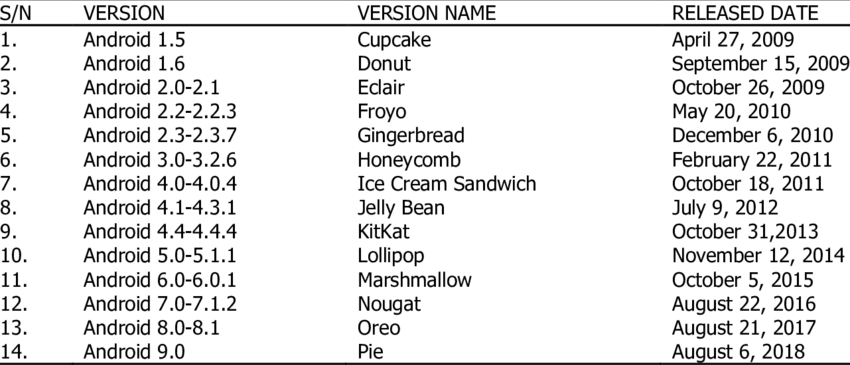

Introduction Windows Linux MacOS Android

Android is a mobile operating system based on a modified version of the Linux kernel and other open source software, designed primarily for touchscreen mobile devices such as smartphones and tablets. Android is developed by a consortium of developers known as the Open Handset Alliance and commercially sponsored by Google. It was unveiled in November 2007, with the first commercial Android device, the HTC Dream, being launched in September 2008.
It is free and open-source software; its source code is known as Android Open Source Project (AOSP), which is primarily licensed under the Apache License. However most Android devices ship with additional proprietary software pre-installed, most notably Google Mobile Services (GMS) which includes core apps such as Google Chrome, the digital distribution platform Google Play and associated Google Play Services development platform. About 70 percent of Android smartphones run Google's ecosystem; competing Android ecosystems and forks include Fire OS (developed by Amazon) or LineageOS. However the "Android" name and logo are trademarks of Google which impose standards to restrict "uncertified" devices outside their ecosystem to use Android branding.
The source code has been used to develop variants of Android on a range of other electronics, such as game consoles, digital cameras, portable media players, PCs and others, each with a specialized user interface. Some well known derivatives include Android TV for televisions and Wear OS for wearables, both developed by Google. Software packages on Android, which use the APK format, are generally distributed through proprietary application stores like Google Play Store, Samsung Galaxy Store, Huawei AppGallery, Cafe Bazaar, and GetJar, or open source platforms like Aptoide or F-Droid.
Android has been the best-selling OS worldwide on smartphones since 2011 and on tablets since 2013. As of May 2021, it has over three billion monthly active users, the largest installed base of any operating system, and as of January 2021, the Google Play Store features over 3 million apps. The current stable version is Android 11, released on September 8, 2020.
Android is developed by Google until the latest changes and updates are ready to be released, at which point the source code is made available to the Android Open Source Project (AOSP), an open source initiative led by Google. The AOSP code can be found without modification on select devices, mainly the former Nexus and current Android One series of devices.
The source code is, in turn, customized by original equipment manufacturers (OEMs) to run on their hardware. Android's source code does not contain the device drivers, often proprietary, that are needed for certain hardware components. As a result, most Android devices, including Google's own, ship with a combination of free and open source and proprietary software, with the software required for accessing Google services falling into the latter category.
